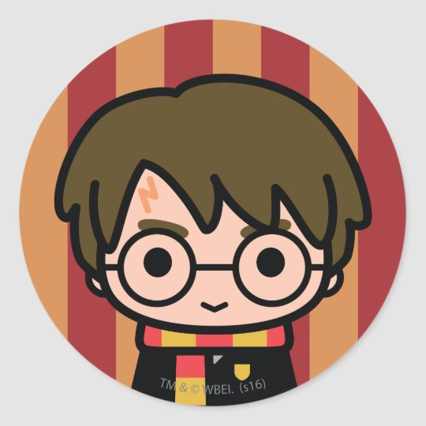

Filtro 1: Esse filtro usado tem função de mudar a escala de cinza das fotos e ele usa como parâmetro a porcentagem, sendo o 0% o normal. -GRAYSCALE-
Filtro 2: Esse filtro usado tem função de inverter as cores das fotos e ele usa como parâmetro a porcentagem, sendo o 0% o normal. -INVERT-
Filtro 3: Esse filtro usado tem função de mudar a cor das fotos deixando como se fossem antigas e ele usa como parâmetro a porcentagem, sendo o 0% o normal. -SEPIA-
Filtro 4: Esse filtro usado tem função de aumentar ou diminuir a cor das fotos e ele usa como parâmetro a porcentagem, sendo o 0% o normal. -SATURATE-
Filtro 5: Esse filtro usado tem função de embaçar as fotos e ele usa como parâmetro pixels. -BLUR-
Filtro 6: Esse filtro usado tem função de diminuir a cor das fotos e ele usa como parâmetro a porcentagem, sendo o 100% o normal. -OPACITY-
Filtro 7: Esse filtro usado tem função de mudar a matriz das fotos e ele usa como parâmetro a porcentagem. -HUE-ROTATE-
Filtro 8: Esse filtro usado tem função de aumentar o brilho das fotos das fotos e ele usa como parâmetro a porcentagem, sendo o 100% o normal. -BRIGHTNESS-
Filtro 9: Esse filtro usado tem função de aumentar ou diminuir o contraste das fotos e ele usa como parâmetro a porcentagem, sendo o 100% o normal. -CONTRAST-
Filtro 10: Esse filtro usado tem função de criar uma sombra ao redor das fotos e ele usa como parâmetros a localização no eixo x, no eixo y e o tamanho do blur da sombra, sendo 0 o meio dos eixos. -DROP-SHADOW-